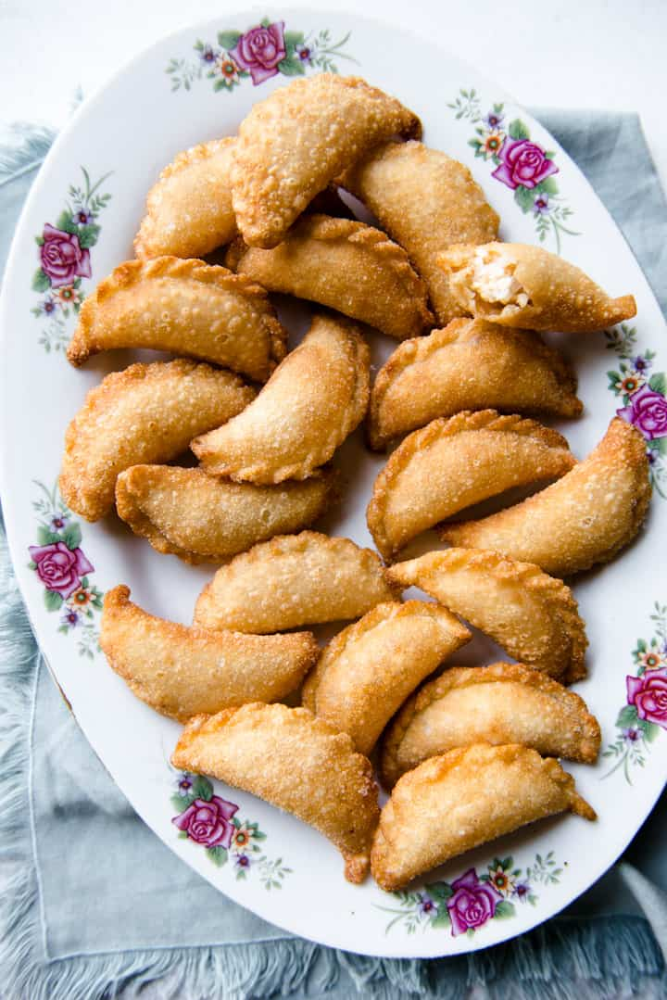

Cantonese Sweet Fried Dumplings

Description
These Cantonese Sweet Fried Dumplings are a staple dish for Chinese New Year.
They're filled with coconut, peanuts, sesame, and sugar. Be warned, they are addictive!
Prep Time : 1 hr, Cook Time : 20 mins, Total Time : 1 hr 20 mins. Total 50 dumplings.
Ingredients
- 1 1/2 cups (150g) sweetened coconut flakes
- 1 cup (140g) chopped toasted peanuts
- 1/3 cup (45g) toasted sesame seeds
- 2 1/2 to 3 tablespoons granulated sugar
- 50 thin, circular 3 1/2-inch dumpling wrappers
- water for sealing dumplings
- 1 1/2 cups canola or safflower oil for frying
Steps
- In a bowl, toss the coconut flakes, peanuts, sesame seeds, and sugar together. Taste the filling to see if it is to your liking.
- Set up your dumpling making station. Fill a small bowl halfway with water. You will use this to help seal the dumplings.
Have a sheet pan ready for holding the pleated dumplings.
You also want to have a tea towel ready to cover the pleated dumplings to prevent them from drying.
- Dip a finger into the water, and trace it over half of a dumpling skin, creating a "c" shape.
Add about 1 tablespoon of filling into the center of the dumpling skin.
Fold the dumpling in half and seal tightly (dry half of the wrapper over the wet half).
- Dip a finger into the water again and trace it over the edge of the dumpling,
creating another "c" shape. Using your thumb, pinch small pleats into the edge.
Continue filling, sealing, and pleating the remaining dumplings.
-
Line a large baking sheet with paper towels. You'll be putting the fried dumplings here.
-
Add the canola oil into a wok and heat it over medium-high heat. Once the temperature reaches 350ºF, reduce the heat slightly to medium.
Add several dumplings to the wok, about 7 or 8. When the dumplings are lightly golden on one side, flip them over and fry the other side.
Once they are lightly golden, use a spider strainer or tongs to transfer the fried dumplings to the lined baking sheet.
The color of the dumplings deepen as they cool, so make sure to take them out once they reach an even light golden color.
-
Continue cooking the remaining dumplings. Note that the dumplings usually cook faster in subsequent batches.
My later batches needed only 2 minutes of frying (about 1 minute on each side).
If you notice that the dumplings are browning too quickly, reduce the heat a little.
-
These dumplings are best consumed the day they are prepared. The dumplings tend to be less crunchy on subsequent days.